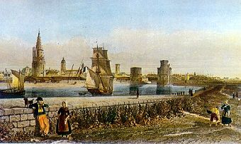

|


| |
|

| Mathieu revient
en France |
| Suite à son contrat d'engagement avec les
Jésuites, Mathieu
quitte le Canada le mercredi 31 octobre 1646. Partir si tard est risqué à cause des glaces dans le
fleuve et des tempêtes dans l'Atlantique nord..
Si l'on considère, qu'au
retour, les vents d'ouest permettent de traverser l'Atlantique
en seulement cinq semaines, Mathieu revient en France fort probablement en décembre.
Il doit en avoir des
choses à raconter à sa famille et à ses amis! Mais ce
qui presse le plus pour lui semble de se marier. Le 26
février 1647 il est devant le notaire Pierre Teuleron pour
passer un contrat de mariage avec une demoiselle Sébastienne
Veillon.
Mathieu connaît-il
Sébastienne avant son départ pour le Canada comme
engagé? Mathieu est-il venu en éclaireur au Canada pour voir s'ils
peuvent s'y établir? Ou le mariage s'est-il décidé
seulement au retour de Mathieu? À cette époque les
mariages sont "arrangés" par les parents, et
l'aspect romantique est évacué de l'évènement.
Faut-il à
Mathieu une bonne dose de persuasion pour convaincre
Sébastienne de quitter sa famille et son pays pour le suivre en
Nouvelle-France? A-t-il "embelli la
vérité" au sujet de la rigueur de l'hiver canadien, des
guerres iroquoises qui se déroulent depuis 1641, du travail
difficile de défricher la terre? A-t-il demandé à son compagnon Robert Hache, témoin
lors du contrat et du mariage, d'appuyer ses dires auprès de
Sébastienne pour la convaincre du bien-fondé de leur départ?
Ou, fort probablement,
Sébastienne n'a-t-elle tout simplement pas eu le choix:
"qui prend mari, prend pays"?. |
|

|
| Sébastienne
Veillon |
| Sébastienne Veillon
est la fille de Maixent Veillon et Bernarde Venet. Elle
est originaire de Verdille dans le Poitou, à 10 lieues de La
Rochelle.
La
province du Poitou figure parmi les trente-trois gouvernements
qui subdivisent la France d'Ancien régime. Elle est limitée au
nord par la Bretagne, à l'ouest par l'océan Atlantique,
au sud par l'Aunis dont la capitale est La Rochelle.
Au
point de vue géographique, le
Poitou
est une terre ondulée en
basses collines d'argile, étalée par endroits en plateaux plus
secs de calcaire. Cette
province est arrosée par de nombreuses rivières prenant toutefois leur
source dans d'autres provinces. Le marais poitevin que la mer
combla progressivement d'alluvions, sera le théâtre des premières
salines dont le produit alimentera le commerce maritime durant
des siècles. À compter du 16ème siècle, les grands
travaux de dessèchement gagnèrent de la terre sur ces marais
dont les secteurs les plus fertiles autorisèrent les cultures
et l'élevage.
Le
climat est tempéré et océanique et la végétation de type méridionale.
Ces conditions climatiques favorisent des cultures multiples
telles que celles du blé, des vins, des fruits, etc. La
province du Poitou se doit d'être considérée comme l'une des
plus fécondes de la France.
|
|
|
|
Contrat de
mariage
|

En cliquant sur le parchemin vous trouverez la transcription
du contrat de mariage de Mathieu et Sébastienne, et une
tentative de traduction partielle.
Ce contrat, découvert par le généalogiste Archange
Godbout, n'est en fait qu'une longue phrase avec les tournures
juridiques de l'époque. La ponctuation et l'accentuation
ont été ajoutées
par le copiste, mais on peut en extraire beaucoup
d'informations.
|
| À La Rochelle, l'après-midi du mardi
26 février
1647, Mathieu et Sébastienne sont réunis avec des parents
et des amis chez Pierre Rouyer pour passer leur contrat de
mariage devant le notaire royal Pierre Teuleron
et ses deux
clercs. De la lecture de ce contrat nous pouvons
apprendre plusieurs faits concernant le couple:
 D'abord, ce document nous donne le nom des parents de
chacun des futurs époux.
D'abord, ce document nous donne le nom des parents de
chacun des futurs époux.
Mathieu dit demeurer à Montréal. Il a donc quitté le
Canada avec la ferme intention d'y revenir.
Sébastienne habite La Rochelle, bien qu'originaire du Poitou.
Mathieu est orphelin de père.
Sébastienne est orpheline de mère.
Sébastienne a un oncle, un grand-père ou un cousin maternel du nom
de Thomas Venette qui est un honorable marchand de La
Rochelle et qui donne son consentement au mariage.
Parmi les témoins on trouve aussi une Marie Venette,
tante, grand-mère ou cousine de Sébastienne du côté de
sa mère.
La signature du contrat se fait dans une maison privée,
chez un ami de Mathieu, Pierre Rouyer. Ce dernier est
aussi témoin au mariage, il est maître menuisier et chantre de St-Jean-du-Perrot,
une autre paroisse de La Rochelle (il y avait cinq
paroisses).
Saint-Jean-du-Perrot,
avec Saint-Nicolas, représentent les quartiers des marins. Ces
deux paroisses étaient à l'origine deux îlots avec chapelle.
Le quartier du Perrot était celui des Hospitaliers de
Saint-Jean-de-Jérusalem où arrivaient les pèlerins venant de
terre sainte et devant rester en quarantaine. La chapelle
Saint-Jean des Hospitaliers est devenue l'église
Saint-Jean-du-Perrot lorsque le quartier a été relié définitivement
à la ville.
Le notaire et ses
deux clercs se présentent donc à domicile pour passer le
contrat de mariage.
Il y a beaucoup de monde pour cette signature de contrat,
on en compte au moins dix-sept et ils n'ont pas tous signé.
Il semble donc que cet évènement soit important et
probablement l'occasion de terminer le tout par un bon repas.
Les deux futurs époux sont analphabètes, et ne peuvent
signer au bas de leur contrat de mariage.
Les deux futurs époux sont majeurs, donc ils ont plus de
vingt-cinq ans car la majorité à l'époque est atteinte à
vingt-cinq ans.
|
|
Pierre
Teuleron, notaire royal
Pierre Teuleron
est le plus important notaire rochelais du 17è siècle.
Il exerce sa profession de 1631 à 1681. Il traite toutes
sortes de contrats, mais plus spécialement les actes de
commerce, dont les contrats d'engagement des "trente-six
mois" pour la Nouvelle-France.. |
 |
Son étude est située au
canton des Flamands, tout près du port, là où se rassemblent
quotidiennement les marchands, armateurs, capitaines de navire,
à tel point que des chaînes en barrent l'accès entre onze et
treize heures, afin de ne pas perturber les négociations.
L'historien rochelais, le père Coutant, situe la maison
Teuleron au numéro 12 de l'actuelle rue Chef-de-Ville. |
 |
|

|
|
|
| Mariage |
|

Mathieu et
Sébastienne se marient le lundi 4 mars 1647 dans
la paroisse Notre-Dame-de-Cougnes à La Rochelle, dans la
chapelle Ste-Marguerite.
Ils s'épousent juste avant le mercredi des Cendres, premier
jour du Carême,
période durant laquelle aucune noce n'est célébrée. Pâques,
cette année-là, est le 21 avril.
L'Acte de Mariage se
retrouve à la Bibliothèque de La Rochelle.
"Le quatre ont
esté espousés Mathieu Chauré d'une part et Sébastienne
Veillon d'autre part tous deux de cette paroisse après la
publication des bans, les tesmoings M. François Pierre Royer,
chantre de Saint-Jean du Perrot, Philippe Cadet, M. Robert
Hache, Zacharie Maloiseau et autres"
Signatures: Prévot,
prêtre de L'oratoire de Jésus, François Pierre Royer,
Zacharie Maloiseau, Philippe Cadet. |
|
|
| Départ pour le
Canada |
| Tout indique que Mathieu et Sébastienne quittent
le port de La Rochelle au cours des semaines suivantes à
destination du Canada où ils s'installent dans la région de
Québec.

Peut-être voyagent-ils avec le compagnon de Mathieu, Robert
Hache, témoin à leur
mariage, . Chose certaine, Hache revient lui
aussi au Canada
puisque, l'année suivante, il est le parrain du premier fils
de Mathieu et Sébastienne. Robert Hache est un donné
des Jésuites, c'est-à-dire un serviteur ad vitam.
C'est un algonquin, originaire de la région de
Trois-Rivières, qui a été adopté et baptisé par les
Jésuites et qui s'est mis à leur service pour le reste de sa
vie. On le retrouve à un
certain moment comme magasinier au comptoir des Jésuites à Québec.
Dans le Journal des Jésuites on lui reproche à deux
reprises des écarts de conduite "en état de
boisson". Dans le premier cas, les Jésuites le mettent à
la ration, mais dans le deuxième, plus grave, Robert Hache est
arrêté par les autorités judiciaires. Il est accusé du viol
d'une Française à l'île d'Orléans en 1664, et condamné à
mort. Il réussit à s'évader. Les autorités engagent des
pourparlers avec les chefs indiens pour le ravoir. Ces derniers
refusent, jugeant la peine trop sévère pour le crime. La
diplomatie jouant, il est entendu, qu'à l'avenir, les indiens
respecteraient la loi française, mais que, dans le cas de
Robert Hache, il n'était pas question de l'appliquer puisqu'il
ignorait cette loi, et n'aurait pas commis ce crime s'il en
avait connu le châtiment....
Ainsi s'en est-il sorti, mais a-t-il continué de servir les
Jésuites? On ne le sait pas. Les français, si peu nombreux,
et les amérindiens alliés vivent ensemble aux débuts de la
colonie. Les Jésuites veulent en faire des catholiques, mais
aussi des sédentaires obéissant aux lois françaises. Ils ne
réussirent pas.
Par contre les colons apprennent beaucoup des amérindiens et
s'adaptent rapidement au pays, développant ainsi une identité
"canadienne" qui différera de plus en plus avec celle
de la métropole. Mathieu revient au Canada avec un contrat d'un an comme
engagé des Jésuites. Sans preuve officielle, il semble
que Mathieu Choret soit le premier résident du Canada à aller
se marier en France et à ramener son épouse au pays. |
|
|
| |
|
|